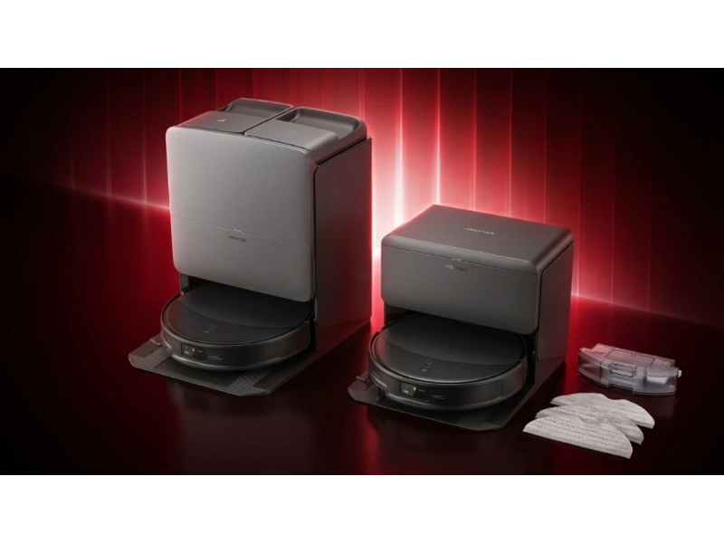
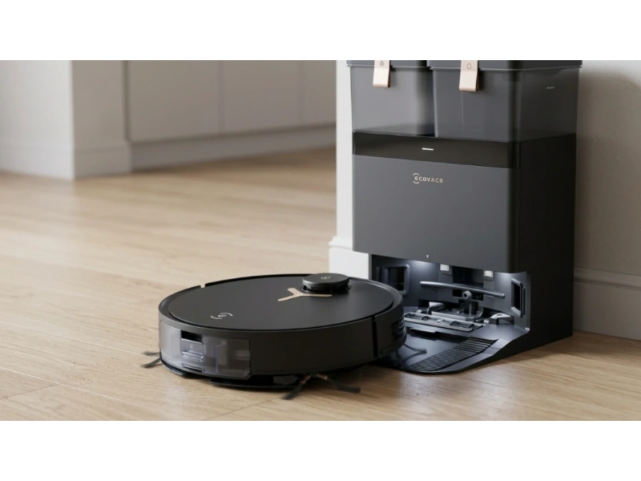
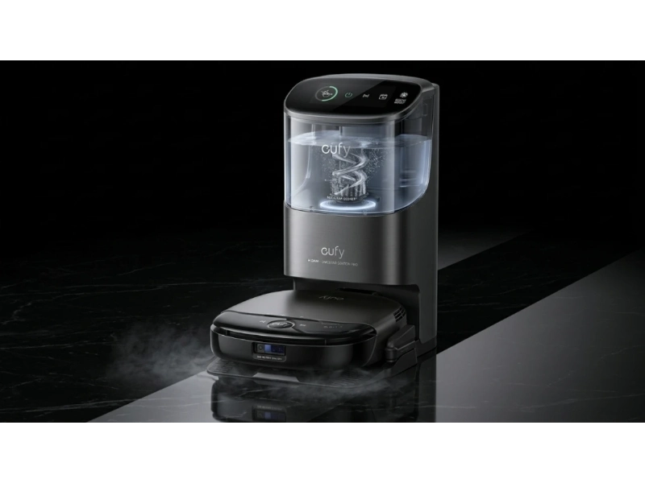

Robot vacuum and mop combos have changed a lot in the last few years. What used to be a simple floor cleaner is now a smart home device that can map your house, avoid obstacles, wash its own mop, and even talk back to you.
But here's the problem. With so many models launching in 2026, it's hard to know which one actually fits your home. Some focus on raw suction power. Others improve mopping. And a few try to do everything at once, but don't always succeed.
If you pick the wrong one, you'll face common issues like wet carpets because the mop won't lift, hair tangled in the brush every few days, missed corners and edges, and constant manual cleaning of the dock.
That's why this guide is built differently. Instead of generic advice, you'll get deep breakdowns of real flagship models, practical insights based on how these robots work in real homes, and clear comparisons so you don't waste money on features you don't need.
Top 5 Best Robot Vacuum and Mop
Choosing a robot vacuum mop is no longer about just suction. Modern devices combine smart navigation, adaptive mopping, and self-cleaning systems to reduce human effort. The best models balance cleaning power, automation, and real-world usability across different floor types and home layouts. Here is the list of top 5 best robot vacuum and mop combos.
- Dreame X60 Max Ultra — Best Overall Robot Vacuum and Mop
- Roborock Saros 20 — Best for Precision and Smart Navigation
- Ecovacs Deebot X8 Pro Omni — Best for Mopping Hygiene
- Shark PowerDetect 2-in-1 — Best for Low Maintenance Costs
- Eufy Omni S1 Pro — Best for Deep Scrubbing
Now let's take a closer look at these vacuums.
1. Dreame X60 Max Ultra — Best Overall Robot Vacuum and Mop
The Dreame X60 Max Ultra focuses on one thing: delivering high-end performance in tight spaces. It combines extreme suction, smart engineering, and strong mopping pressure to handle homes where dust hides under furniture and along edges. If you want a single robot that does everything well without requiring constant supervision, this is the one.
Key Specs
The first thing you notice is the 35,000 Pa suction power. That's far above what most homes actually need. In real use, this matters most for deep carpet cleaning, pulling dust from thick rugs, and picking up heavy debris like sand or pet litter.
But suction alone isn't the real story here. The retractable LDS (LiDAR) module allows the robot to lower its height to just 7.95 cm. This solves a very common problem. Many robots fail to clean under beds, sofas, and cabinets because they're too tall. In a typical home, that means dust builds up in hidden zones and you still need manual cleaning. This design directly removes that gap.
The X60 uses dual rotating pads spinning at 230 RPM with 15N downward pressure. Most cheaper robots only "wipe" the floor. This one actually scrubs. The base station washes the mop with 100°C boiling water, reducing bacteria and odor — especially useful in humid environments where dirty mops can smell quickly.
- 35,000 Pa suction handles carpets and heavy debris
- Retractable LiDAR reaches under low furniture at 7.95 cm
- Dual rotating mops with 15N pressure for real scrubbing
- 100°C boiling water mop wash reduces bacteria
- FlexiAdapt chassis climbs obstacles up to 8.8 cm
- Premium price point
- Overkill for small apartments

2. Roborock Saros 20 — Best for Precision and Smart Navigation
The Roborock Saros 20 is built around precision. Instead of focusing only on power, it improves how the robot understands and adapts to your home in real time. In cluttered homes where floors are rarely "perfectly clean" before a cleaning cycle, this matters more than raw suction numbers.
Key Specs
At its core is the 36,000 Pa HyperForce motor, slightly higher than the Dreame on paper. But the key innovation is the AdaptiLift Chassis 3.0. This system allows the robot to raise its body up to 30mm when needed, handling thick carpets, door thresholds, and uneven floor transitions without getting stuck.
The StarSight Autonomous System 2.0 uses 3D RGB cameras to recognize 300+ object types. In real use, it avoids charging cables, shoes, pet waste, and small toys. Older robots rely heavily on bumping into objects or basic LiDAR mapping. This system adds visual understanding, making cleaning more efficient and less risky.
The FlexiArm technology physically extends the mop pad and side brush into tight 90-degree corners — less dust left along walls and better cleaning in kitchens and edges.
- 36,000 Pa HyperForce suction
- Recognizes 300+ object types for smart avoidance
- AdaptiLift Chassis 3.0 handles thick rugs and raised thresholds
- FlexiArm extends into corners other robots miss
- Higher price than most competitors
- Camera-based navigation requires adequate lighting

3. Ecovacs Deebot X8 Pro Omni — Best for Mopping Hygiene
The Ecovacs Deebot X8 Pro Omni takes a different approach. Instead of pushing suction to the extreme, it focuses on solving one overlooked problem: dirty mops spreading dirt across the floor. If your home has mostly hard floors and you care more about how clean they feel after mopping than raw vacuuming numbers, this model delivers a different level of floor cleaning.
Key Specs
Most robots use spinning pads. This one uses OZMO ROLLER technology, a continuous roller mop. While cleaning, the mop is constantly washed by 16 internal water nozzles, dirty water is removed immediately, and fresh water is applied in real time. So instead of dragging dirt around, it keeps cleaning with a fresh surface.
In real homes, this leads to cleaner tiles after one pass, less streaking, and better performance in high-traffic areas. The 18,000 Pa suction is lower than competitors, but it's optimized for airflow efficiency, not just pressure — consistent performance across surfaces with less noise.
The ZeroTangle 2.0 brush roll reduces hair wrap significantly, which is especially helpful for pet owners and homes with long hair shedding. The YIKO-GPT voice integration also allows natural language commands like "clean the kitchen area" instead of rigid presets.
- Continuous roller mop stays clean during the entire cleaning cycle
- 16 internal nozzles deliver constant fresh water to the mop
- ZeroTangle 2.0 brush roll minimizes hair wrap
- Variable mop washing at 40–75°C
- Natural voice commands via YIKO-GPT
- Lower suction than top competitors
- Less effective on deep pile carpets

4. Shark PowerDetect 2-in-1 — Best for Low Maintenance Costs
The Shark PowerDetect 2-in-1 focuses on practical usability. Instead of chasing extreme specs, it solves everyday problems like ongoing costs, carpet protection, and hands-free cleaning. It's built for users who want convenience without constant maintenance — and without paying a premium for features they don't need.
Key Specs
Shark does not clearly list suction in Pascals. Estimates place it around 8,000 Pa, which sounds lower on paper. But raw numbers don't tell the full story. The Dirt Detect technology automatically boosts power when it senses heavier debris — adjusting based on dust concentration, floor type, and debris size. In real homes, this leads to better battery efficiency and strong performance only where needed.
One standout feature is the NeverTouch Pro Base, which is completely bagless. Most premium robots require dust bags that need replacing every few weeks. Over a year, that adds up. With this system, there are no recurring bag costs and lower long-term ownership cost.
A common issue with robot mops is wet carpets. Shark solves this with automatic pad drop-off and pick-up — when vacuuming carpets, the robot leaves the mop at the dock, and picks it back up only when switching to hard floors. Carpets stay fully dry.
- Bagless base eliminates recurring dust bag costs
- 60 days of debris storage, 30 days of water management
- Automatic mop pad drop-off keeps carpets fully dry
- Dirt Detect technology boosts power only when needed
- Lower suction than flagship competitors
- Less advanced AI navigation

5. Eufy Omni S1 Pro — Best for Deep Scrubbing
The Eufy Omni S1 Pro takes a design-first approach, but it doesn't ignore performance. It focuses heavily on mopping mechanics, sanitation, and ease of use without relying too much on apps. If your floors get sticky or require frequent deep cleaning, this model is closer to how humans actually clean floors than most robot mops.
Key Specs
The standout feature is the Always Clean Mop™ system. Instead of spinning pads, it uses a 290mm roller mop with 1kg downward pressure. That's important because pressure directly affects cleaning quality. In real use, it removes dried stains more effectively and covers more surface area per pass.
The Eco-Clean Ozone generator sanitizes water before it reaches the floor. Dirty water tanks can develop odor, spread bacteria, and reduce cleaning hygiene over time. With ozone treatment, water stays cleaner and floors get a more hygienic clean.
Most robot vacuums are circular, which makes corner cleaning difficult. The S1 Pro uses a square front-end design, allowing better reach into edges and improved cleaning along walls. The base station also includes an LCD touch control panel for starting, stopping, and adjusting settings without a phone.
- 1kg mop pressure mimics real manual scrubbing
- Ozone water sanitization improves hygiene
- Square front-end design reaches corners other robots miss
- LCD touch panel on dock — no phone required
- Lower suction at 8,000 Pa
- Better for mopping than heavy vacuuming
Types of Robot Vacuum Mop Combos
Robot vacuum mop combos come in different designs, each built for specific cleaning needs. Some focus on vacuum power, while others improve mopping systems or automation. Understanding these types helps you choose a model that actually matches your home layout and lifestyle.
Vacuum-First Hybrid Models
These models prioritize suction and treat mopping as a secondary feature. They have high suction power, basic mop pads, and are good for carpets and rugs. Best for homes with more carpet than hard floors and users who mainly want vacuuming.
Mop-Focused Cleaning Systems
These robots are built around mopping performance. They often include rotating or roller mops, higher downward pressure, and advanced washing systems. Best for tile-heavy homes, sticky messes and spills, and daily floor polishing.
Fully Automated Dock Systems
These are the most advanced options. They include self-emptying dustbins, mop washing and drying, and water tank refilling. Best for busy users, large homes, and minimal manual interaction.
Smart AI Navigation Models
These robots focus on intelligent movement and object recognition. Key features are camera-based navigation, object detection, and room-specific cleaning. Best for homes with clutter, families with kids or pets, and users who want precise cleaning.
How to Choose the Right Robot Vacuum Mop
1. Floor Type Matters Most
If your home is mostly carpeted, prioritize suction power — look for models above 15,000 Pa. Tile and hard floor homes benefit more from strong mopping systems, like roller mops with high downward pressure. Mixed flooring needs a robot that handles transitions well and protects carpets from mop moisture.
2. Obstacle and Furniture Layout
Low furniture like beds and sofas block many robots. Look for models with a slim body under 8 cm. Cluttered rooms with cables, shoes, or toys need advanced object recognition — camera-based systems identify significantly more object types than basic LiDAR alone.
3. Automation Level
Consider how much you want to interact with the robot after setup. High-end docks handle mop washing, water refilling, and debris emptying automatically. Basic docks just charge the unit. If you want hands-free cleaning for weeks at a time, budget for a full self-maintenance station.
4. Long-Term Running Costs
Some robots require replacement dust bags every few weeks, replacement mop pads monthly, and regular filter changes. Over a year, these costs add up. Bagless systems and durable roller mops reduce ongoing expenses. Always check consumable costs before buying, not just the upfront price.
5. Suction Power vs. Mopping Quality
High Pa numbers don't automatically mean cleaner floors. Airflow design, brush roll quality, and floor contact all affect real performance. Similarly, mopping quality depends on pad pressure and whether the mop stays clean during cleaning — not just whether a mop pad is included.
Maintenance Tips to Make Your Robot Last Longer
- Clean brushes and rollers weekly — hair and dust buildup reduce suction over time. Homes with pets may need this twice a week.
- Empty and rinse water tanks after each cleaning cycle to prevent residue buildup and odor, especially in warm climates.
- Wipe sensors and cameras with a soft cloth once a week — dirty sensors cause missed areas and less accurate navigation.
- Replace filters every 1–3 months and mop pads or rollers based on wear to maintain cleaning performance.
- Keep the dock area free from clutter and check that water lines, trays, and docking sensors are clean.
Comparison: Top Robot Vacuum Mops Side by Side
| Model | Suction | Mopping System | Key Technology | Best For |
|---|---|---|---|---|
| Dreame X60 Max Ultra | 35,000 Pa | Dual rotating pads (230 RPM, 15N) | Retractable LiDAR, slim body | Deep cleaning + low furniture |
| Roborock Saros 20 | 36,000 Pa | FlexiArm extending mop | AdaptiLift 3.0, 3D vision | Precision + cluttered homes |
| Ecovacs Deebot X8 Pro Omni | 18,000 Pa | Continuous roller mop | OZMO ROLLER, self-washing | Mopping hygiene |
| Shark PowerDetect 2-in-1 | ~8,000 Pa | Auto pad drop system | Bagless base, Dirt Detect | Low-cost maintenance |
| Eufy Omni S1 Pro | 8,000 Pa | 290mm roller (1kg pressure) | Ozone water, square design | Deep scrubbing |
Frequently Asked Questions
Are robot vacuum mop combos worth it in 2026?
Yes, especially for daily maintenance. Modern models handle both vacuuming and mopping with minimal effort. They don't fully replace deep cleaning, but they reduce how often you need to do it manually.
How much suction power do I really need?
For most homes, 5,000–10,000 Pa is enough for hard floors, while 15,000+ Pa helps with carpets. Higher numbers help, but cleaning efficiency also depends on brush design and airflow — not just the Pa figure.
Do robot mops work well on sticky floors?
Yes, but only certain types. Roller mops and high-pressure systems perform better than basic pads. Models with continuous washing or strong downward force remove dried stains more effectively than those with simple spinning pads.
Can robot vacuums damage carpets with mopping?
They can if the mop stays attached while crossing carpets. Advanced models solve this by lifting the mop automatically, avoiding carpets entirely, or dropping the mop at the dock before each carpet run.
How often should I run a robot vacuum mop?
For best results, vacuum daily or every other day and mop 2–4 times per week. High-traffic homes, especially those with pets or kids, may need more frequent cleaning cycles.
Final Verdict
Robot vacuum and mop combos in 2026 are no longer basic cleaning tools. They are automated systems designed to reduce daily effort, but each model focuses on a different strength.
If you want maximum cleaning power and reach under low furniture, the Dreame X60 Max Ultra stands out. If your priority is precision navigation and smart obstacle avoidance, the Roborock Saros 20 is the stronger choice. If mopping quality and hygiene matter most, the Ecovacs Deebot X8 Pro Omni delivers a different level of floor cleaning. For users who want lower long-term costs and simple automation, the Shark PowerDetect 2-in-1 offers solid value. And if deep scrubbing and modern design are your focus, the Eufy Omni S1 Pro fits well.
The key is simple. Don't choose based on specs alone. Choose based on how your home actually gets dirty.